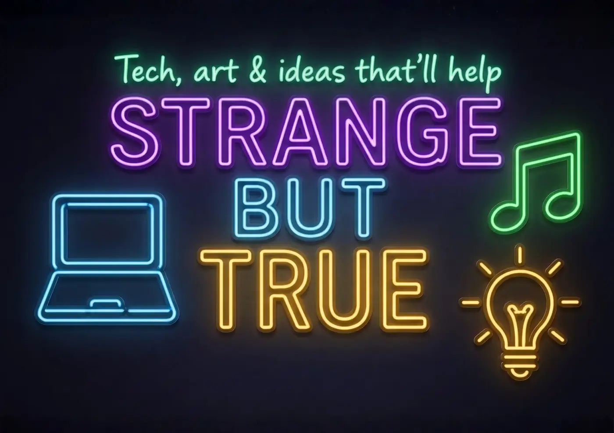

Front, side, approach from ferry, ramp/access, two tenancy entries, rear parking and bay-view context.
Phone-first and TV-ready
Take the real photos. Make the short clips. Leave room for the wide-screen story.
Most people will meet this on a mobile phone, while the same story also needs to hold up on TVs, ferry screens, community screens and grant presentation displays.
Current visual layer
Use concept art until real local media is ready.
The existing concept images are useful placeholders, but the public site will become more believable when it has real permission-safe photos of 9 Ballow Road, co-working, local training, asset care, media practice and community activity.

Images to take or make
A practical shot list for the next capture day.
Each image needs a mobile crop, a wide crop and public-safe alt text. Identifiable people appear only with clear consent.
Phone shots from the ferry-side arrival point to 9 Ballow Road, including street-level orientation and access context.
A simple work session: forms, grant notes, business profiles, cups of tea, whiteboard and printed checklists.
Hands around a table, shared checklist, signed permission note or labelled gear return. Avoid staged corporate handshake energy.
Microphones, tripod, phone clamp, projector, charger box, sign-out card, return shelf and repair note.
Younger helper and elder/learner with consent, or over-shoulder device shot with no private screen details.
Phone tripod, caption draft, audio recorder, local event board and a screen-safe story queue.
Attendance sheet, photo folder, quote list, timeline, budget note and public/private folder labels.
Official source links, date checked, printed page, sticky notes and a clear no-legal-advice boundary.
Wide public shots of sand courts, markers, cones and community sport energy. Consent for faces.
Produce, prep, shared meal, recipe board or waste-reduction story, with cultural and health boundaries respected.
A tasteful abstract or generated image for the optional deep page, not the home hero.
Vertical videos
Short clips for phones, socials and QR codes.
Vertical clips stay plain, useful and warm. Each one invites the next small step rather than trying to explain the whole universe.
Luke explains the handoff goal: make repeatable work trainable so locals can take paid roles.
9:16 placeholderStart anywhere safe
Phone reel: direct-to-camera plus Ballow cutaways.
A calm walking route from ferry arrival to the possible front desk, with text overlays and no hard claims.
9:16 placeholderArrival route
Use gentle captions and street-level proof.
Show ordinary entry points: profile, task, boundary, role, asset, room, event, media or formal step.
9:16 placeholderEntry points
Use cards on a table, not abstract jargon.
Demonstrate a mic/tripod check-out and return without exposing expensive storage or private addresses.
9:16 placeholderShared assets
Useful, boring, confidence-building.
One simple task: scan QR code, save a note, check an official source, or use voice typing.
9:16 placeholderOne task
Show hands and screen-safe details.
Show how a photo, date, attendance note and outcome sentence becomes useful grant evidence.
9:16 placeholderEvidence pack
Make admin feel lighter.
Landscape placeholders
Wide-screen explainers like the Strange but True demo style.
These are for website embeds, TV screens, grant presentations, ferry screens and community info sessions.
Five-minute explainer: Strange but True seed, trust spectrum, 9 Ballow, jobs, media, grants and deep horizon.
16:9 placeholderReady S.E.T. overview
Use as the main website embed once produced.
Wide edit for TV: the building, the rooms, possible uses, lease options, risks and immediate setup steps.
16:9 placeholder90-day base plan
Good for stakeholder conversations.
Visual roadmap from one person's service work to training, crews, co-op services and formal job families.
16:9 placeholderJobs roadmap
Use simple counters and real role examples.
Capture care
Useful footage is consent-aware footage.
Private screens, paperwork, addresses, children, cultural material, vulnerable people, expensive gear locations and informal conversations stay out of footage unless permission and purpose are crystal clear.
For grant evidence, it is often enough to show the room, materials, activity, output and public-facing result. Faces are not always necessary.
Two formats
Phone-first and screen-ready.
Every key story can have one vertical version for phones and one wide version for screens: the same message, framed for different places.